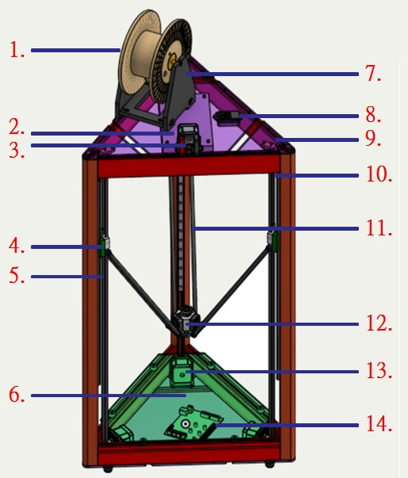

V-rep 在 Delta 3D Printer虚實整合模擬上的應用
組員
40323250 詹偉志
40323218 李冠興
40323231 張立昇
40323230 張元
指導老師 : 嚴家銘 教授
目錄
3D Printer
3D Printer結構介紹 組裝過程 程式碼介紹 Cura Pronterface 校正機台 重點提攜
目錄
V-rep
On Shape 介紹 STL 四連桿 八連桿 控制模擬 Arduino Python
目錄
Python Solvespace
Python Solvespace
3D Printer結構介紹


組裝過程
程式碼介紹
Cura
機台設定 進入Cura後的主畫面後須先設定機台，點選機型設置(左圖)進入設定頁面(右圖)，此機台的平台為圓形所以設定Circular(因此寬、深因此相同)。擠出機也只有一個所以選擇1。由於機台為三角形機台，因此平台中心設為(0,0)。波特率設為115200(需與韌體相同)。設定完之後即可開始使用Cura

Pronterface

校正機台
重點提攜
V-rep
V-rep是一套機器人模擬軟體 ,讓使用者可以模擬整個機器人系統或他的子系統(如感測器或機械結構)
可用在遠端監控、硬體控制、快速原型驗證、演算法開發與參數調整、安全性檢查、機器人教學與工廠自動化模擬等各種領域。

V-rep使用說明
在模擬任何物件之前都必須引入圖檔 ,並在內部拆解開來重新組裝(建立子屬關係) ,讓環境能辨別出實體的各部位零件
V-rep使用說明
子屬關係主要是針對各部位的旋轉軸(主動與從動關係)
做設定 ,之後再依照個人需求 ,設定環境下的物理性質 ,最後再輸入參數來使其作動
下方為範例 (左為預期 , 右為模擬)


V-rep使用說明
透過外界的參數輸入 ,可以模擬訊號輸入
V-rep使用說明
Python Solvespace
使用 Python 3 的 Solve Space 模組。

Solvespace 簡介
SolveSpace 是一款開源的 2D / 3D 電腦輔助設計繪圖（CAD）軟體，從 2008 年釋出第一個版本，相容於 Windows / Mac / Linux 三個平台。
有著體積小、執行快速、免費，且不用安裝的特性，支援 STEP 或 STL 開啟，或輸出成 DXF 、 PDF 、 SVG 等開放格式，也有自己的文字式格式 「*.slvs」 。
更新方面，可以在 GitHub 的官方倉儲或是非官方倉儲中下載最新的原始碼後，直接利用開發者工具（如 GNU）編譯出主程式。

概念啟發
Solvespace 在繪圖程式本身外還附帶一個名為 CDemo 的小執行檔，是利用 Solvespace 的原始碼編譯出來的。
可以利用此外部程式呼叫 Solvespace 的程式庫「libslvs.dll」進行 2D 或是 3D 的解題運算，而無須啟動 Solvespace 。
CDemo 的概念是能夠讓外部程式使用 Solvespace 的功能，無論是利用其解開最大行程、干涉位置，都能讓應用程式免去您需要親自使用 CAD 軟體解題的困擾。
轉為 Python 語言
CDemo 為 C 語言編譯而成，使用的 Solvespace 程式庫則是C++編譯的，在運算和使用上固然快速，但活用性較局限。
Python 語言擁有大量自定義模組、易讀的函式，並且在網際執行方面比C語言多一片天，若將 Solvespace 程式庫轉換使用，將會使這些 Python 程式擁有線上解題的能力，在機械設計方面更是方便許多。
在 Python 的連結庫中，「*.pyd」和 Windows 中 C 語言的動態載入庫「*.dll」相仿；「*.so」則是大部分開放式作業系統（如為人熟知的 Ubuntu）使用的。「*.so」的優點是利於共享資料，執行檔與程式庫分離，更新函式庫更為方便。
Python-Solvespace 的製作概念是利用 SWIG 軟體製作一個 C++ 至 Python 的端口，重新編譯了 Solvespace 的程式庫，使任何一個使用 Anaconda 3 (Python 3.5) 的 Python 程式都能夠使用 Solvespace 的程式庫。
這個程式庫也不是使用固定的軟體版本，為開放原始碼的方式編譯。使用者使用哪種作業系統、編譯工具、Python 3 版本，都能適用新的工具來運作。
當 Solvespace 的函式轉換成 Python 介面時，也希望保持這個語言一貫清爽易懂的名稱，因此特別重新分類了這些指令的名稱及用法。

Jupyter
圖形介面程式（IDE）
Python 的近端應用就是使用 PyQt 來寫一個機械設計相關的應用程式。
Qt 是一個跨平台的 C++ 應用程式開發框架，使用標準的 C++ 和特殊的代碼生成擴充功能。這個龐大的架構亦有支援大部分的物件導向語言，例如 Java 的 QtJambi、Lua 的 QtLua、Python 的 PyQt 等等。
應用我們新 Kernel 的方式就是設計一款解決 2D 連桿約束的圖形介面軟體。
Pyslvs (pySolvespace)
這個應用程式從 2016 年 9 月起開始開發，採用 AGPL-3.0 或以上的自由軟體授權。
設計上盡量偏向機械工程人士使用的 CAD 軟體，以簡單的步驟設計出需要的連桿尺寸，並轉為公用的 2D 或 3D 圖檔，供其他 CAD 軟體編輯。
2D 檔案格式採用公用格式 DXF，使用 Python 的 dxfwrite 模組（MIT License）生成。而 3D 的檔案格式採用 STL，使用 Python 的 python-stl 模組（MIT License）生成。
Pyslvs 展示影片
Pyslvs 轉檔功能
一些轉檔匯入VREP的圖片